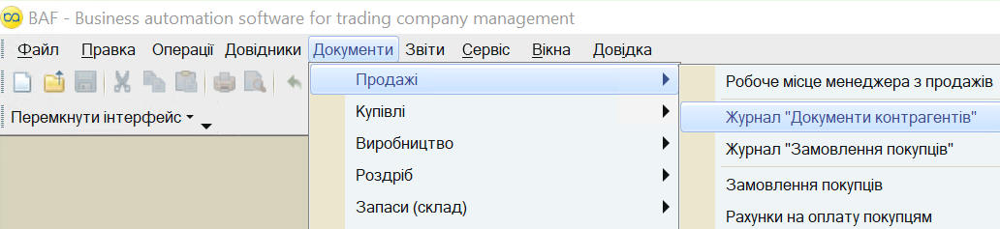
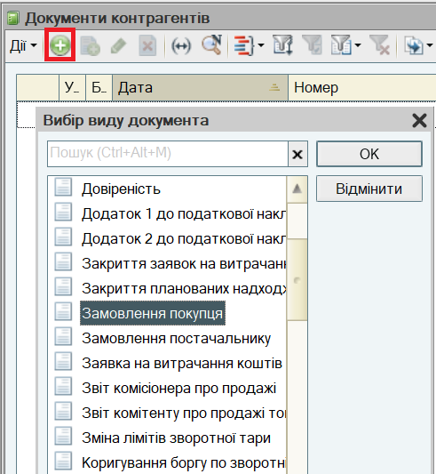
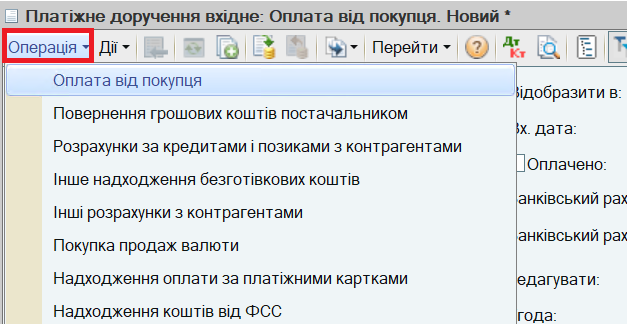

. При введенні нового документа з журналу потрібно вибрати вид документа.
. При введенні нового документа з журналу потрібно вибрати вид документа.Основним способом реєстрації торговельних операцій (купівля і продаж товарів, оплата постачальнику, списання товарів тощо) є введення документів. Документи доступні з головного меню програми. Для кожного користувача може бути встановлений свій інтерфейс залежно від його ролі в торговельному підприємстві: Управління продажами, Управління купівлями тощо. При цьому склад пунктів головного меню і склад картинок у кожному інтерфейсі різний.

ПРИМІТКА
При описі торгівельних операцій зазначення пунктів меню наводиться відповідно до Повного інтерфейсу.
Усі документи згруповані в журнали або списки документів. У списках зберігаються документи тільки одного виду, а в журналах документи різних видів. Наприклад, у журналі Документи контрагентів зберігаються всі документи, які були оформлені з клієнтом: замовлення покупців, накладні, платіжні документи. Документи одного виду об'єднані в списки: Замовлення покупців, Реалізація товарів і послуг, Прибуткові касові ордери тощо.
Для швидкого виклику журналу або списку документів призначені піктограми.
Введення нового документа може здійснюватися як із журналу, так і зі списку документів за кнопкою . При введенні нового документа з журналу потрібно вибрати вид документа.

Один документ може бути призначений для реєстрації кількох видів торгівельних операцій. Різним операціям відповідають різні набори даних, що вводяться, і різні правила проведення документа. Тому Вид операції слід встановлювати перед початком заповнення документа. Наприклад, документ Платіжне доручення вхідне призначений для реєстрації таких видів операцій: Оплата від покупця, Повернення грошових коштів постачальником, Розрахунки за кредитами і позиками тощо. Вид операції зазначається за кнопкою Операція командної панелі форми документа.

Документ можна записати в інформаційну базу (кнопка Записати) и провести (кнопка ОК).
| ПРИМІТКА Запис документа без проведення означає, що документ підготовлено заздалегідь для реєстрації торгівельної операції в майбутньому. При проведенні документа фіксується факт здійснення торговельної операції (відвантаження товарів зі складу, списання грошових коштів з каси для виплати підзвітній особі, виникнення заборгованості перед постачальником тощо).. |
Більшість документів при натисканні на кнопку ОК формують записи в облікових регістрах, наприклад, змінюють залишки товарів на складах підприємства або суму заборгованості клієнта. Ці записи називаються "рухами" документа. Список облікових регістрів, за якими документ сформував рухи, можна побачити, натиснувши на кнопку Перейти в командній панелі форми документа (або списку документів).
Наступний розділ: "Встановлення настройок для швидкого оформлення документів"